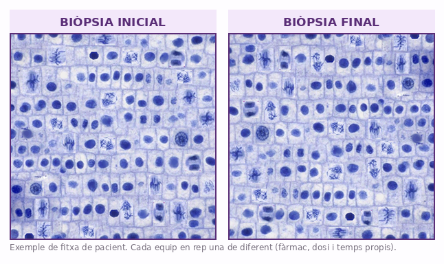

✎ Clica per editar · Ctrl+B negreta · × rosa elimina · Ctrl+Z desfés
×
🔬
SA2 · La cèl·lula · Sessió 3 de 4
El laboratori d'oncologia
Índex mitòtic: comptar per diagnosticar
Biologia i Geologia · 4t ESO IE Temple
×
Laboratori de recompte i decisió amb dades⏱️ 2h total
Nom:
Data:
B
×
🎯 Objectius d'aprenentatge d'avui
Distingeixo una cèl·lula en divisió (cromosomes visibles) d'una en interfase (nucli difús).
Calculo l'índex mitòtic: cèl·lules en mitosi dividit pel total, per cent.
Comparo l'índex abans i després i dic si ha baixat, per concloure si el fàrmac funciona.
Explico amb les meves paraules que el càncer és una divisió sense control.
×
0
Idees prèvies ⏱️ 10 min
Posem en comú els deures. No es corregeix
✏️ 1. Dels deures: en una frase pròpia, per què la meiosi és imprescindible per a la reproducció?
✏️ 2. Un metge que mira teixits al microscopi (un patòleg) vol saber si hi ha càncer. Què creus que busca? Què veuria de diferent en un teixit malalt?
×
1
Compta i calcula els dos índexs ⏱️ 40 min
Sou el laboratori: mesureu abans i després
Cada equip rep una fitxa de pacient diferent (un ratolí amb el seu fàrmac, dosi i temps) amb dues biòpsies (trossets de teixit) reals: una abans del tractament i una després. Compteu-hi i calculeu l'índex mitòtic de cadascuna. La Fig.2 mostra un exemple del tipus d'imatge.
×
Fig.1 · Interfase (no compta) vs en divisió (sí compta) + la fórmula de l'índex mitòtic.
×

Fig.2 · Exemple de fitxa de pacient. Compta a la teva (cada equip en té una de diferent).
Recompte
Biòpsia INICIAL
Biòpsia FINAL
Total de cèl·lules del camp
Cèl·lules en divisió (fils foscos)
Índex mitòtic = (divisió ÷ total) × 100
×
🧭
Com es compta (pas a pas)
Per a CADA camp del microscopi, fes-ho en dos passos. Pas 1: compta TOTES les cèl·lules del cercle (les difúses i les de fils foscos). Pas 2: compta només les que estan EN DIVISIÓ (fils foscos = cromosomes visibles). Després: índex mitòtic = (en divisió ÷ total) × 100. Fes-ho primer amb la biòpsia INICIAL i després amb la FINAL.
🗣️ Demostració a l'aula: prepara com defensaràs el vostre veredicte davant d'una altra parella, ensenyant els números que l'aguanten.
×
2
Interpreta els números ⏱️ 20 min
Què vol dir cada índex?
Com es llegeix un índex mitòtic: no hi ha un número màgic igual per a tot el cos. Un índex alt només és sospitós si és molt superior al normal d'AQUELL teixit (la pell, l'intestí i la medul·la dels ossos (que fabrica la sang) el tenen alt de manera sana, perquè es renoven cada dia) o si no baixa quan el teixit ja hauria d'estar refet. El ~10% és només una referència general per a teixits que es divideixen poc.
✏️ Compara els dos índexs entre ells. Què indica cadascun sobre l'estat del teixit?
×
🧭
Ajuda
Recorda la clau de la Fig.1: INTERFASE = nucli difús → NO compta. EN DIVISIÓ = cromosomes visibles → SÍ compta. Després compara els teus dos números entre ells i amb el que seria normal en aquest teixit: el que informa no és el número sol, sinó si és molt més alt del que toca i si baixa o no.
×
3
Veredicte: funciona el fàrmac? ⏱️ 25 min
La conclusió de l'equip, amb dades
✏️ Escriu el veredicte de l'equip. Acompanya'l SEMPRE dels dos números (índex inicial i final).
×
🧭
Com es decideix (pas a pas)
Respon en ordre: 1) L'índex INICIAL estava molt per sobre del que és normal en aquest teixit? (sí/no). 2) L'índex FINAL és més ALT, IGUAL o més BAIX que l'inicial? 3) Conclusió: si baixa clarament → el fàrmac frena la divisió → FUNCIONA. Si puja o es manté → no funciona.
×
4
Per què el càncer no para + torna al principi ⏱️ 15 min
Aplica-ho i respon la pregunta d'entrada
✏️ Per què el càncer és una divisió sense control? I per què la quimioteràpia té efectes secundaris? (Respon les dues coses.)
×
🧭
Ajuda
En una cèl·lula normal, el cicle s'atura quan toca (hi ha controls). En una cèl·lula cancerosa, el control falla i no para de dividir-se. Un fàrmac antimitòtic atura la divisió. La quimio ataca TOTES les cèl·lules que es divideixen molt, també les sanes.
×
🧭
Ètica i ciència
Un sol ratolí no demostra res: els assajos es fan amb molts casos i sovint a cegues (qui compta no sap quin tractament ha rebut la mostra) per no enganyar-se. Decidir si un fàrmac serveix afecta vides reals.
🔬 Torna al principi: què compta exactament el laboratori per saber si un fàrmac funciona? Respon en 3-4 línies amb el que has calculat avui.
×
🧠 Metacognició — 3 min
×
🎯 Torna als objectius — marca el que has après avui:
Sé distingir una cèl·lula en divisió d'una en interfase.
Sé calcular l'índex mitòtic d'una biòpsia.
Amb els dos índexs, sé decidir si un fàrmac funciona.
Entenc que el càncer és una divisió sense control.
×
❓
Encara em pregunto…
×
⭐
Puntuació de la sessió
★★★★★
Encercla les estrelles
×
📚 Feina per a casa — per a la Sessió 4
×
1
📋 Mini-informe de 4-5 línies, com la conclusió d'un article científic: què heu mesurat, quins números abans i després, i el vostre veredicte sobre el fàrmac. Ha de poder-se defensar només amb les dades.